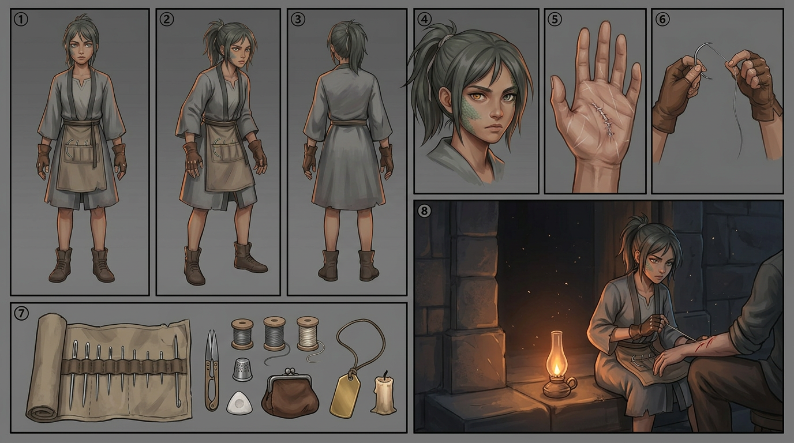

Open art page →IRA SUTAR — इरा सुतार
Status: Protagonist First appearance: Chapter 01, Page 001, Panel 3 Kind: Manavkin (मानवकिण) — humankin, braided thread Sector: Agnikhand (Ash Sector), Ashfall Basin Age: 15 Mark location: Palm → projection type. Sewn shut. Ref sheet: ira-sutar-ref.png — 8 panels (the house standard) Alt sheet: ira-sutar-alt.png — alternate states, expressions, staging and silhouette (spec §7) Ref sheet panels: front · side · back · face · detail (the stitched right palm) · hands (cut-finger gloves, needle and thread) · kit (needle-roll, thread, thimble, shears, chalk, purse, blank brass tag, candle) · action (mending at a doorstep by hand-lamp) Alt panels: default state · ceremony-day state · five expressions · macro hands · satchel tipped out · crowd staging · waiting-room staging · three silhouettes
{kind=link}
Appearance (art continuity)
- Eyes: mismatched — left amber, right grey-green. Draw both visible whenever possible.
- Face: a patch of fine grey-green scale along the left cheekbone, ending at the jaw. Not a tattoo.
- Hair: dark, ash-dulled, tied back badly with a strip of mending thread.
- Hands: the important feature. Thread-mender's leather gloves, fingertips cut off. Calloused index fingers. Fine white scars across both palms from her own needle slips.
- Clothes: grey ceremony robe, second-hand, hem too short. Under it, mender's working clothes — canvas apron with needle loops.
- Silhouette test: recognisable by the crooked ponytail + cut-finger gloves + sewing hunch.
Rule: Ira is drawn slightly less polished than everyone around her. She should look like she got dressed in a hurry, because she did.
Personality
- Practical to the point of rudeness. She has never had time for awe.
- Observant, not clever. She notices seams, strain, and who is lying about their debt. She is not a genius and must never be written as one.
- Refuses pity, accepts payment. Charges coin for mending. Insists on it. It is the only thing the city has ever owed her.
- Dry humour under pressure. Never jokes when things are going well.
- The wound: she believes her empty hand means she is worth nothing. The reader should see before she does that she is the only person in the city who does not owe.
Voice
- Short sentences. Never explains herself twice.
- Says "this'll pull" instead of "this will hurt."
- Under stress she goes quieter, not louder. Panel 7 is her whispering.
Powers
Currently: none. She drew no thread at her Unspooling.
Known ability — Mending (सांधन):
- Reweaves torn thread and torn debt-marks. Physical, slow, exhausting, needs needle and thread.
- Creates no debt. This is the whole reason she matters.
- Illegal without a licence in six Sectors; Agnikhand licenses it through the Mendery.
Hard canon rules — never break these:
- She cannot mend herself. Whatever was done to her palm, she cannot undo. Ever.
- Mending is labour. She sits down, she bleeds, she is tired afterwards.
- She cannot mend people — only marks. When that changes, it is a major arc event.
Debt
None. Zero. No marks anywhere on her body.
This is treated as a defect in Chapter 1 and as the series' central mystery thereafter. Everyone in Agnikhand reads "no debt" as "no worth." They are wrong.
Card-game line (record from day one — see 04-card-game-notes.md)
Ira Sutar / Manavkin / Agnikhand / colourless thread / zero debt /
Mend: cancel target debt instead of paying it / "Not one of them was mine."Open questions (do not resolve early)
- Who sewed her palm shut, and why? (long-arc — target reveal ~Chapter 200)
- Was a thread taken from her, or was she never given one?
- Her mother was bound to the Mendery. What happened there?
- Why is her mark a projection mark when mending is not projection work?